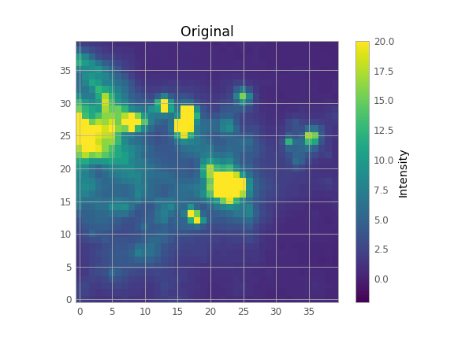

Different methods of reconstructing FITS images with missing data
dp
Created: 2024-05-13 Mon 03:57
1. Εισαγωγή
- Να πάρω εικόνες
- Να κρύψω περιοχές τους
- Να τις ξαναγεμίσω


1.1. Γιατί;
- Πολλές φορές οι εικόνες από τις παρατηρήσεις μας έχουν “κενά”
- (π.χ. καμένα pixel)
- Θέλουμε να αφαιρέσουμε περιοχές και ελλατώματα της εικόνας για να έχουμε καλύτερες μετρήσεις
- (π.χ. κοσμικές ακτίνες, LIS πίσω από νεφελώματα, …)
- Αφαίρεση θορύβου
1.2. Σκοπός
Να συγκρίνω 3 διαφορετικές μεθόδους/εργαλεία που γεμίζουν τα κενά
1.2.1. Απλή μέση τιμή (Maskfill)
1.2.2. Astropy Convolution
Η συνέλιξη είναι μια μαθηματική διαδικασία μεταξύ δύο συναρτήσεων που περιγράφει πώς το σχήμα της μίας τροποποιείται από την άλλη. Το αποτέλεσμα αυτής της διαδικασίας είναι το ολοκλήρωμα του γινομένου των δύο συναρτήσεων, μετά την αναδίπλωση και ολίσθηση της μίας συνάρτησης κατά μήκος της άλλης. \[(f * g)(x) = \sum_{k=-\infty}^{+\infty} f(k) \cdot g(x-k), \quad \forall \quad x \in Z \]
- Gaussian Convolution
- Fast Fourier Transform Convolution
1.2.3. Integrated Nested Laplace Approximations (INLA)
- Είναι μια ευέλικτη υπολογιστική προσέγγιση βασισμένη στην Βαγιεριανή στατιστική. \[P(A\vert B) = \frac{P(B \vert A) P(A)}{P(B)}\]
- Ολοκληρώνει αριθμητικά και χρησιμοποιεί την προσέγγιση Laplace για να κάνει fit τα δεδομένα.
- Χρησιμοποιείται για γρήγορη και ακριβή εκτίμηση των κατανομών παραμέτρων μοντέλου, αντικαθιστώντας τις μεθόδους Markov chain Monte Carlo (MCMC)
2. Κριτήρια Αξιολόγησης
Μέσο τετραγωνικό σφάλμα (MSE):
- Το μέσο τετραγωνικό σφάλμα υπολογίζει τη μέση τετραγωνική διαφορά μεταξύ της αρχικής και της καλυμμένης εικόνας. Μια χαμηλότερη τιμή MSE υποδηλώνει μεγαλύτερη ομοιότητα μεταξύ των δύο εικόνων.
Ο τύπος για το MSE μεταξύ δύο εικόνων Α και Β, κάθε μία με διαστάσεις \(m \times n\), είναι:
\[ MSE = \frac{1}{mn} \sum_{i=0}^{m-1} \sum_{j=0}^{n-1} (A_{ij} - B_{ij})^2 \]
Δείκτης δομικής ομοιότητας (SSIM):
- Ο SSIM είναι μια μετρική μετρά την ομοιότητα μεταξύ δύο εικόνων. Λαμβάνει υπόψη τη φωτεινότητα, την αντίθεση και τη δομή. Σε αντίθεση με το MSE, ο SSIM λαμβάνει υπόψη τη δομή των εικόνων, καθιστώντας τον πιο κατάλληλο για την αξιολόγηση των αντιληπτικών διαφορών.
- Ο δείκτης SSIM κυμαίνεται από -1 έως 1, όπου το 1 υποδηλώνει τέλεια ομοιότητα. Τυπικά, μια τιμή άνω του 0,9 θεωρείται καλή αντιστοιχία.
Ο τύπος του δείκτη SSIM περιλαμβάνει συγκρίσεις μεταξύ των τοπικών γειτονιών των εικόνων. Ο τύπος για το δείκτη SSIM μεταξύ των εικόνων Α και Β είναι:
\[ SSIM(A, B) = \frac{(2 \mu_A \mu_B + C_1)(2 \sigma_{AB} + C_2)}{(\mu_A^2 + \mu_B^2 + C_1)(\sigma_A^2 + \sigma_B^2 + C_2)} \]
3. Προβλήματα που αντιμετώπισα
3.1. ΠΡΟΓΡΑΜΜΑΤΙΣΜΟΣ ΚΑΙ ΑΓΑΠΗΜΕΝΑ VERSIONS
Τα εργαλεία που χρησιμοποιώ είναι γραμμένα σε Python και R. Ενώ τα Astropy Convolution έτρεχαν χωρίς κανένα ιδιαίτερο θέμα, τα άλλα δύο είναι γραμμένα από φυσικούς
3.1.1. “Σε μένα δουλεύει”
- Ή απάντηση του author “Spatial field reconstruction with INLA: application to IFU galaxy data”. To INLA δουλευε στον υπολογιστή του, σε κανέναν άλλον.
- Το ίδιο πρόβλημα και με το Maskfill
3.2. Λύση
- Είναι αναγκαίο να απομονώσεις όλο σου τον κώδικα και τα προγραμματα που χρησιμοποιείς από το υπόλοιπο υπολογιστή για να μην έχεις θέματα συμβατότητας.
Αυτοτελές προγραμματα που δεν εξαρτώνται από τον υπολογιστή σου -> Επαναληψημότητα
Έμαθα Nix Shell
4. Αποτελέσματα
4.1. Maskfill

| Comparison | MSE | SSIM | |
|---|---|---|---|
| 0 | 0 | 0 | 1 |
| 1 | 10 | 169.6 | 0.840653 |
| 2 | 20 | 150.396 | 0.885354 |
| 3 | 30 | 140.01 | 0.910179 |
| 4 | 40 | 125.399 | 0.933453 |
4.2. Gausian Convolution

| Comparison | MSE | SSIM | |
|---|---|---|---|
| 0 | 0 | 41.3184 | 0.954215 |
| 1 | 10 | 175.025 | 0.828449 |
| 2 | 20 | 156.099 | 0.867492 |
| 3 | 30 | 146.611 | 0.886603 |
| 4 | 40 | 135.17 | 0.903326 |
4.3. FFT Convolution

| Comparison | MSE | SSIM | |
|---|---|---|---|
| 0 | 0 | 41.3184 | 0.954215 |
| 1 | 10 | 175.025 | 0.828449 |
| 2 | 20 | 156.099 | 0.867492 |
| 3 | 30 | 146.611 | 0.886603 |
| 4 | 40 | 135.17 | 0.903326 |
4.4. INLA


5. Τελικός σκοπός
- Να βρω ποια είναι η πιο αποτελεσματική μέθοδος (μάλλον INLA)
- Να φτιάξω τον κώδικα έτσι ώστε:
- Να τρέχει πάντού (επαναληψιμότητα)
- Να είναι εύχρηστως και αποδοτικός
Καλά αποτελέσματα με λίγα δεδομένα